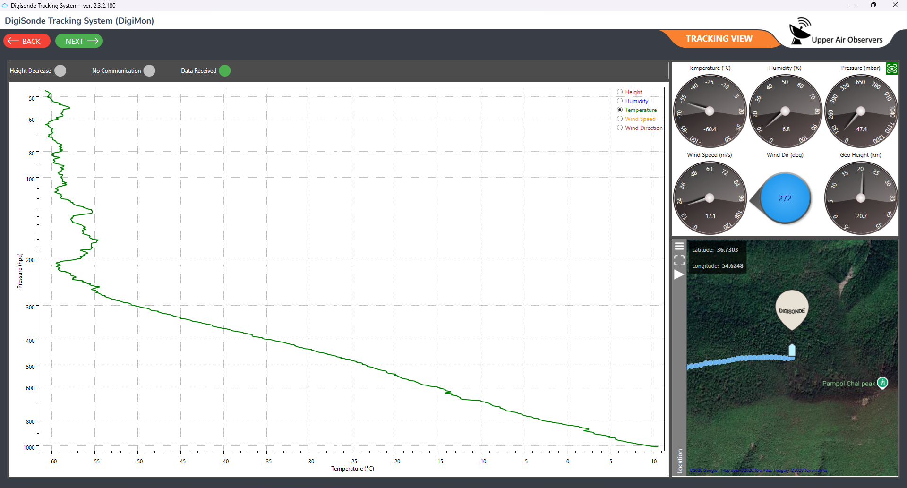
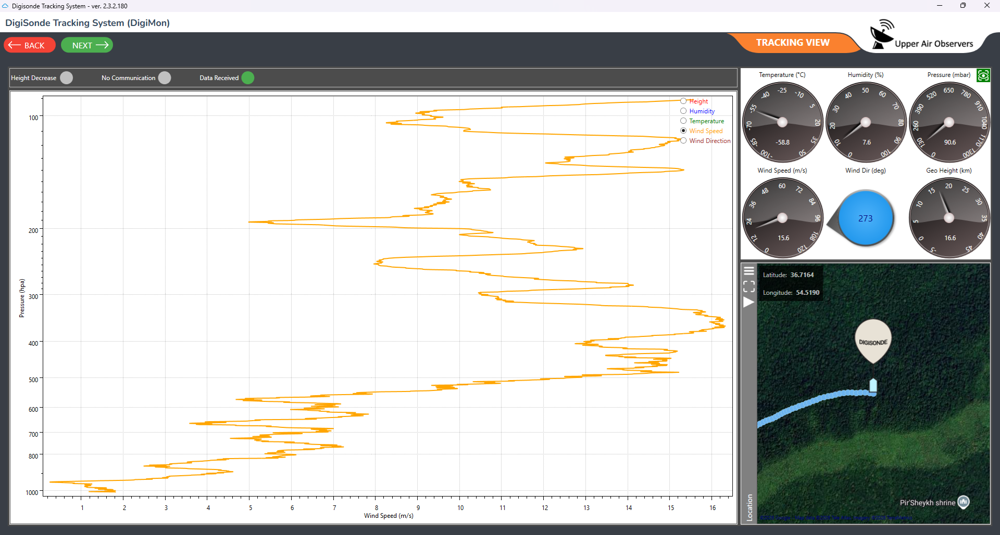
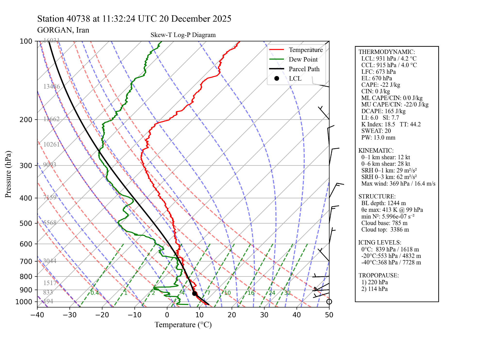

DIGIMON® GROUND STATION & SOUNDING SOFTWARE
DigiMon sounding software
An operational sounding software suite for ground check, real-time telemetry monitoring, WMO-standard TEMP output, Skew-T profile generation, simulation profiles and post-processing corrections.





DIGIMON® GROUND STATION & SOUNDING SOFTWARE
The operational interface for a sounding campaign
DigiMon integrates radiosonde operations, ground validation and atmospheric profile analysis into a unified workflow. The software supports ground check procedures, real-time telemetry monitoring, live parameter graphs, simulation profiles, Skew-T log-P diagram generation, post-processing corrections and generation of meteorological output products including WMO-standard TEMP messages.
- New sounding workflow
- Ground check and station position
- Simulation profiles
- Generate WMO-standard TEMP output
- Real-time telemetry data and live parameter graphs
- Skew-T log-P profile generation
- Post-processing corrections and quality control
- Compare ascents and profiles
- User and system settings
MEASUREMENT FLOW
Operational tools for sounding, checking, comparing and reporting
DigiMon serves as the operational software layer that ties together ground-check, telemetry monitoring, sounding control, correction workflows and reporting tasks for the complete upper-air system.